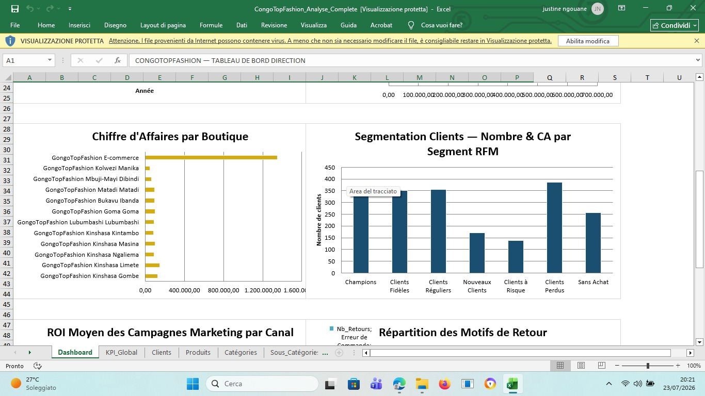
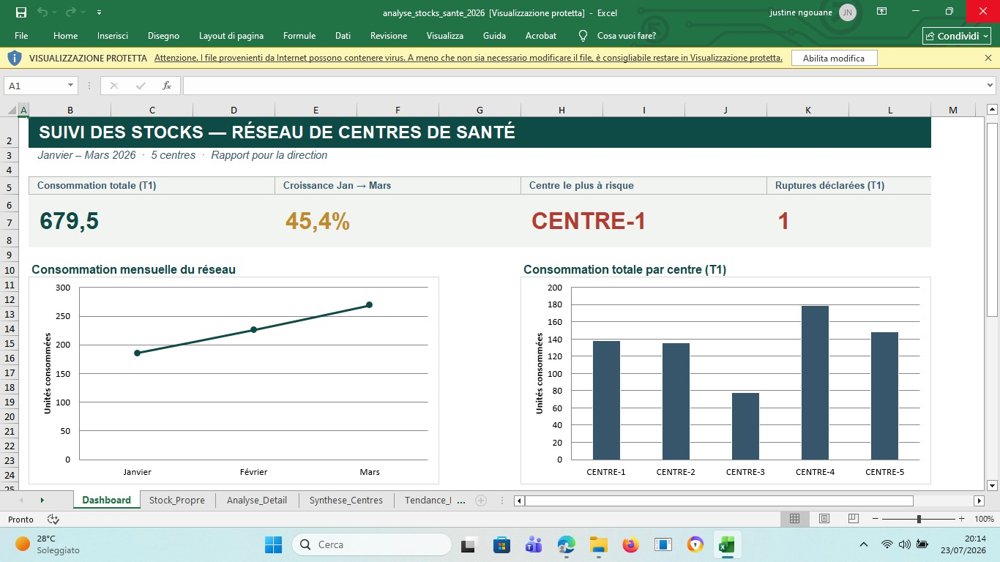
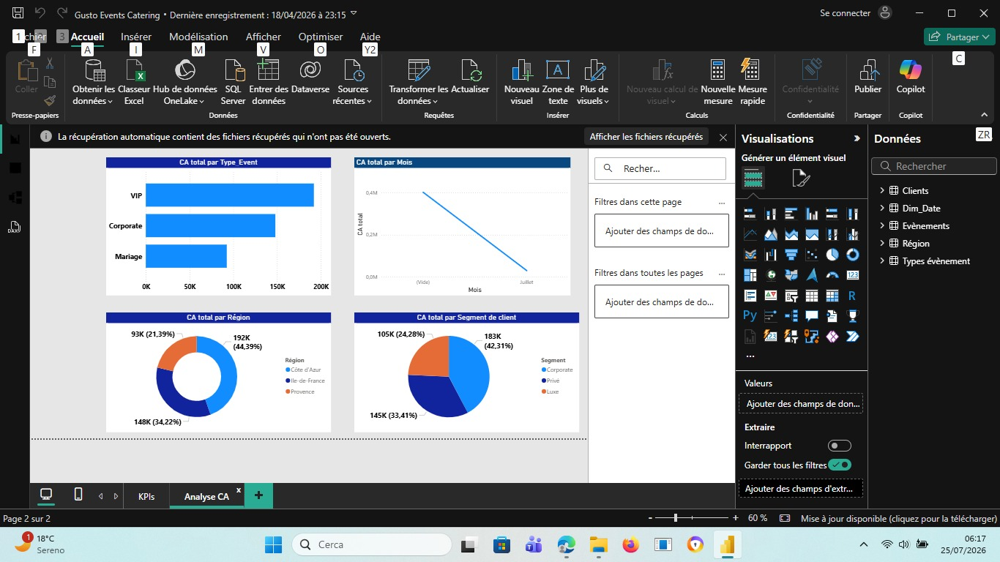
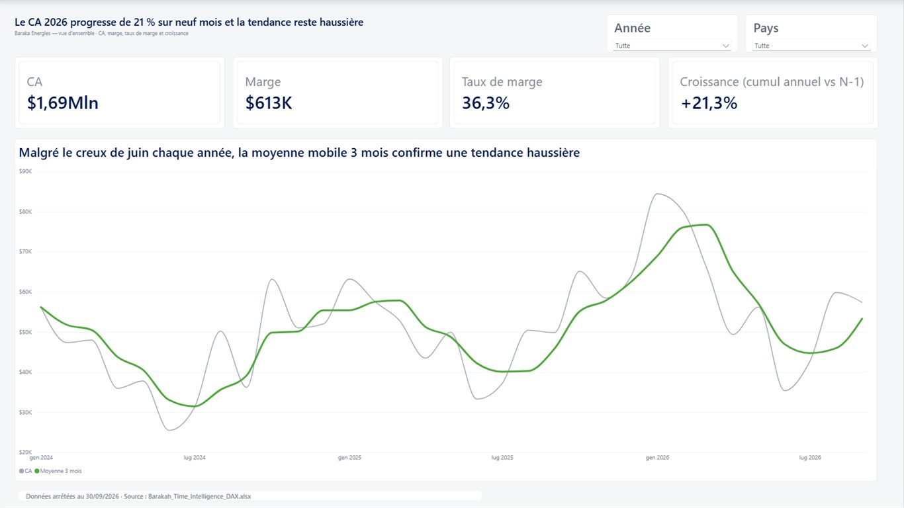
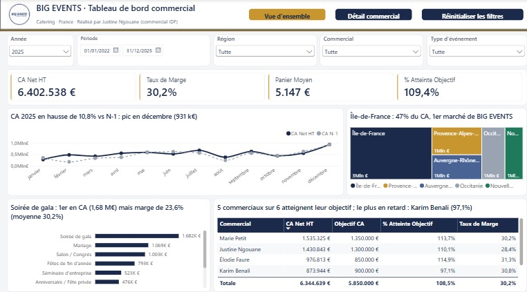

Consultante MOA BI & Data Analyst — disponible pour missions
Justine Ngouane II Kenfack
Data Analyst
Je conçois des tableaux de bord Power BI fiables à partir de données consolidées en un
seul référentiel — pour que vos comités de direction discutent de stratégie, pas de qui
a le bon chiffre.
Consultante MOA BI et Data Analyst spécialisée en Power BI, basée à Rome. Après une
formation juridique (Licence en Droit et Master en Droit
des Affaires à l'Università degli Studi di Roma La Sapienza), elle a d'abord exercé
comme analyste fiscale pendant six ans avant de se réorienter vers la Business
Intelligence, une transition consolidée par une certification en BI obtenue en juin 2023.
Depuis 2023, elle a accompagné Habentis Data Solution à Paris, puis Ambra System
à Rome, dans le recueil des besoins métier, la rédaction de
spécifications fonctionnelles et le développement de tableaux de bord décisionnels.
Sa double expertise technique (SQL Server, SSAS, SSRS, DAX, Power BI Services) et
méthodologique (Agile, Scrum, UML) lui permet d'assurer le lien entre les équipes
métier et les équipes techniques. Trilingue (français, italien, anglais), elle est
également engagée dans la vie associative, notamment en tant que présidente de
l'Association des Femmes Camerounaises en Italie (ASFECAI).
Compétences
Analyse & reporting BI
Excel
Power BI
Power BI Service
DAX
Bases de données
SQL Server
SSAS
SSRS
Programmation
Python
R
Méthodologie & gestion de projet
Agile
Scrum
UML
IA appliquée
Claude
Automatisation
Projets

Tableau de bord décisionnel global — CongoTopFashion
Conception d'un tableau de bord centralisant plus de 25 domaines métier (clients,
produits, boutiques, stocks, marketing, logistique...) pour unifier le pilotage
décisionnel de CongoTopFashion dans une vue globale pour la direction.

Suivi des stocks — Réseau de centres de santé
Pilotage des stocks d'un réseau de 5 centres de santé (janvier-mars 2026), pour
donner à la direction une vision claire des ruptures, risques de pénurie,
surstocks et de la qualité des données saisies.

Analyse et optimisation des marges — Gusto Events Catering
Analyse de la rentabilité par segment d'activité (Corporate, Private,
Institutional) pour un traiteur belge, afin d'identifier des leviers d'optimisation
des marges face à l'inflation des coûts matières.

Performance commerciale et objectifs — Baraka Energies
Refonte d'un rapport Power BI de ventes d'équipements solaires dans une vingtaine
de pays africains : quatre KPI, des titres qui concluent et une seule information
mise en avant par visuel, pour lire la performance en quelques secondes.

Rapport de certification Power BI — BIG EVENTS Catering
Rapport de certification réalisé de bout en bout pour un traiteur événementiel
présent dans 5 régions françaises : modèle en étoile, nettoyage Power Query,
mesures DAX, extraction, info-bulle personnalisée et titres qui concluent.
Tableau de bord décisionnel global — CongoTopFashion
Problème
Ce projet s'inscrit dans le cadre de la modernisation du pilotage décisionnel de
CongoTopFashion, une entreprise structurée autour de nombreuses entités opérationnelles :
clients, produits, catégories, sous-catégories, marques, fournisseurs, employés,
boutiques, commandes, stocks, promotions, campagnes marketing, objectifs commerciaux,
livraisons, retours, etc. L'objectif était de construire un tableau de bord global pour
la direction, capable de centraliser et d'analyser l'ensemble des données de l'entreprise
dans une vue unifiée. Le fichier source contient plus de 25 onglets thématiques, chacun
dédié à un domaine métier spécifique (KPI global, KPI annuel, analyse des catégories,
analyse des boutiques, analyse clients RFM, analyse marketing, analyse logistique
retours, analyse fournisseurs, analyse stocks, etc.).
Méthode
À l'aide d'Excel, j'ai construit des indicateurs de chiffre d'affaires par boutique, de
chiffre d'affaires par segment, ainsi qu'une répartition des motifs de retour, à partir
des plus de 25 onglets sources.
Résultat
L'analyse a révélé que le canal e-commerce génère le chiffre d'affaires le plus élevé de
tous les segments, et que les problèmes de taille constituent le principal motif de
retour — deux constats qui ont directement orienté les priorités d'action de la
direction.
Suivi des stocks — Réseau de centres de santé
Problème
Ce projet s'inscrit dans le cadre du pilotage des stocks d'un réseau de 5 centres de
santé, sur la période janvier à mars 2026. L'objectif était de fournir à la direction
une vision claire et fiable de la consommation, des ruptures, des risques de pénurie,
des surstocks, ainsi que de la qualité des données saisies.
Méthode
À l'aide d'Excel, j'ai analysé la consommation mensuelle de stocks, la consommation
totale par centre, la couverture de stock par centre, identifié le centre le plus à
risque, et suivi les ruptures déclarées.
Résultat
L'analyse a identifié le Centre 1 comme le plus à risque, avec un stock en chute
continue sur trois mois (85 → 72 → 37), signalant une rupture imminente avant même
qu'elle ne survienne. Une rupture confirmée a par ailleurs été enregistrée au Centre 5
en février, validant la fiabilité du suivi mis en place pour anticiper ce type
d'incident.
Analyse et optimisation des marges — Gusto Events Catering
Problème
Gusto Events Catering est un acteur majeur du catering en Belgique, actif sur trois segments :
les événements d'entreprise (Corporate), les mariages et fêtes privées (Private), et la
livraison de repas aux institutions et écoles (Institutional). Face à une concurrence
accrue en 2025-2026 et à l'inflation des coûts des matières premières, la direction
souhaitait optimiser ses marges sans détériorer la satisfaction client.
Méthode
À l'aide de Power BI, j'ai analysé le chiffre d'affaires par région, par client, par
mois et par type d'événement, puis comparé le coût total par type d'événement afin
d'identifier les segments les plus rentables et ceux qui pesaient sur la marge globale.
Résultat
L'analyse a révélé que les événements VIP, bien qu'affichant les coûts les plus élevés
des trois segments, génèrent également le chiffre d'affaires le plus important —
orientant la direction vers un arbitrage sur ce segment plutôt qu'une réduction
uniforme des coûts.
Performance commerciale et objectifs — Baraka Energies
Problème
Baraka Energies distribue des kits solaires, des batteries et des appareils basse
tension dans une vingtaine de pays africains. Son rapport de ventes alignait une dizaine
d'indicateurs sur un fond sombre, sans hiérarchie ni conclusion : la direction ne voyait
pas d'un coup d'œil si l'activité progressait, ni où agir.
Méthode
Dans Power BI (format PBIP), j'ai réduit la vue d'ensemble à quatre indicateurs — chiffre
d'affaires, marge, taux de marge et croissance cumulée vs N-1 — et à un seul grand
visuel : l'évolution mensuelle du CA avec sa moyenne mobile sur trois mois. J'ai créé un
thème JSON aux couleurs du logo, passé chaque visuel en gris en ne laissant qu'un seul
élément en couleur, réécrit chaque titre en phrase qui conclut et ajouté la date des
données en pied de page. Côté modèle, j'ai écrit en DAX les mesures de marge et de
croissance cumulée, et corrigé les mesures qui affichaient −100 % sur les mois sans ventes.
Résultat
Le rapport se lit désormais en quelques secondes : le CA 2026 progresse de 21 % sur neuf
mois, trois produits réalisent les deux tiers des ventes et le Nigeria pèse 16 % du
chiffre d'affaires. Il montre aussi qu'aucun pays n'atteint son objectif (91 % de
réalisation globale, entre 88 % et 93 % selon les pays) : un écart aussi homogène suggère
des objectifs fixés trop haut partout, plutôt qu'un problème propre à un marché.
Rapport de certification Power BI — BIG EVENTS Catering
Problème
Pour ma certification Power BI, j'ai mené un projet complet autour de BIG EVENTS, un
traiteur événementiel (organisation fictive créée pour ce projet) actif
dans 5 régions et 18 villes françaises : séminaires, galas, mariages, salons. La direction
commerciale devait suivre le chiffre d'affaires, la marge et l'atteinte des objectifs de
six commerciaux sur 2023-2025, à partir de données brutes imparfaites (valeurs vides,
doublons, espaces parasites).
Méthode
J'ai conçu un modèle en étoile (une table de faits de 3 600 ventes et six dimensions),
nettoyé les données dans Power Query (types, 45 doublons, valeurs vides recalculées),
créé une table Calendrier marquée comme table de dates et écrit une vingtaine de mesures
DAX : CA, marge, panier moyen, comparaison N-1, cumul YTD, atteinte d'objectif
proratisée et classement des clients. Le rapport Power BI compte une vue
d'ensemble, une page de détail commercial accessible par extraction, une info-bulle
personnalisée par région, et des titres dynamiques qui énoncent la conclusion de chaque
visuel selon les filtres.
Résultat
Le CA 2025 atteint 6,4 M€, en hausse de 10,8 % sur 2024, et cinq commerciaux sur six
dépassent leur objectif (109 % au global). L'Île-de-France concentre 47 % du chiffre
d'affaires. Surtout, les soirées de gala sont le premier type d'événement en CA
(1,68 M€) mais affichent la marge la plus faible (23,6 % contre 30,2 % en moyenne) :
un levier de tarification prioritaire pour la direction.
Contact
Disponible pour des missions freelance ou un poste de data analyst — n'hésitez pas à me contacter.